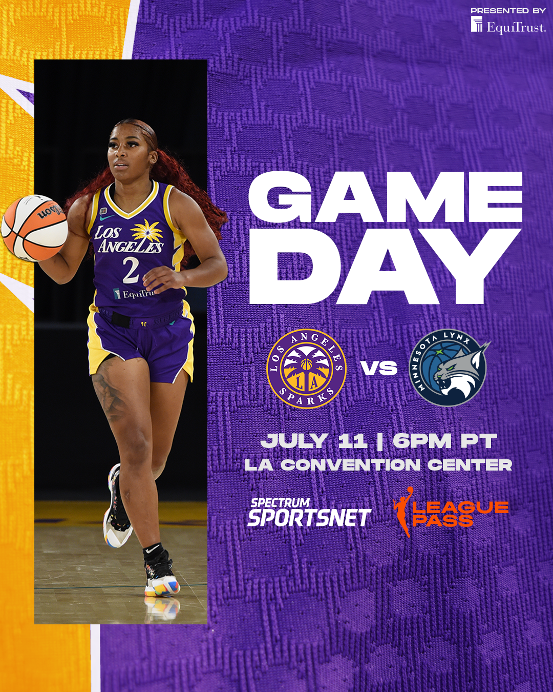
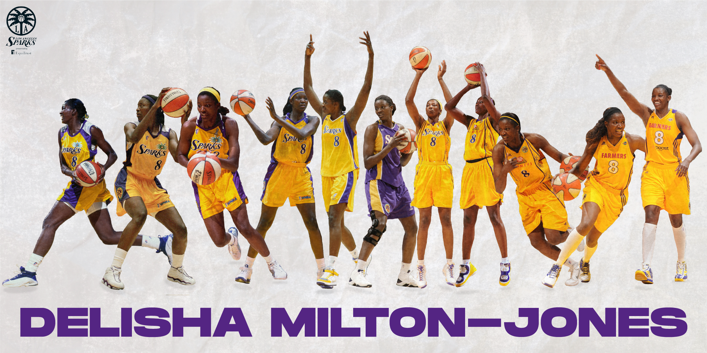
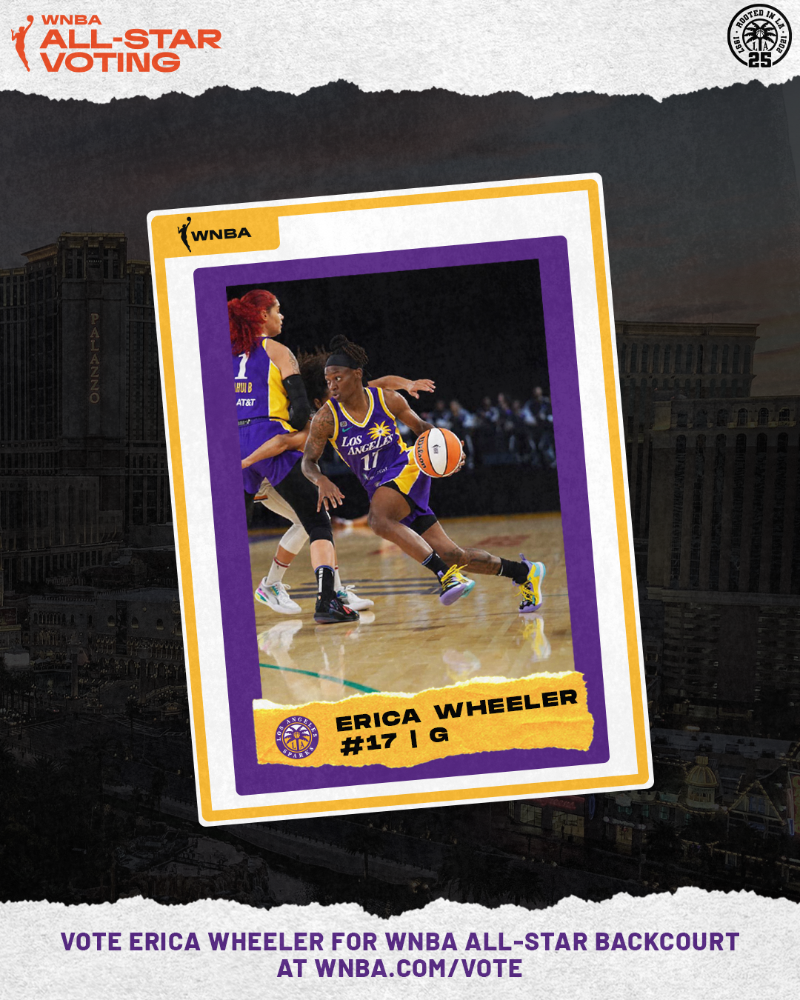

During my time as an intern for the Los Angeles Sparks, I was fortunate
enough to work with many individuals from across the country. During the
experience, there were many of my colleagues who moved on to jobs elsewhere,
which was bittersweet, but those departures gave me the opportunity to fill
some holes I wouldn't have had to fill before. I was able to help manage the
LA Sparks website and video platforms, but additionally help create graphics
for our social pages. I was able to immensely grow in my design skillset, and
build more of a passion for design. Check out some projects below!
Nneka Ogwumike is Back
Following the Olympic Break came the return of former MVP, Nneka Ogwumike. The team had been riddled with injuries the entire first half of the season, and getting an All-Star caliber player back in the lineup was key to our success. In conjunction with a video to highlight Nneka's return for socials, I made this simple graphic for my fellow intern, where it was used in the intro of the graphic.
Gameday Graphic Mockup
After the Olympic Break began, my supervisor wanted to move forward into the second half of the season with new gameday graphics--ones we could switch out based on the uniforms we were wearing for certain games. While this never made it to the final stages of production, nor was it used on socials, it was something cool that I enjoyed.

LA Sparks vs. Phoenix Mercury - Through The Years
The Los Angeles Sparks and Phoenix Mercury are two of three remaining original teams from the start of the WNBA. To highlight the history in this storied rivalry, I created this graphic to showcase photos through the years, but also the sheer dominance the Sparks had put on the Mercury for the past 25 years.
Delisha Milton-Jones - Through The Years
Similarly to the graphic above, this graphic was created to highlight one of the franchise's most valued players in Delisha Milton-Jones. This graphic was my first design task for the Sparks, and one I will remember.
Erica Wheeler All-Star Card
For the All-Star voting push, as a marketing team, we were pushing for three of our players in the fan voting for the 2021 All-Star Game. While this graphic never made it far in production either, it was still a cool one that highlighted the city of Las Vegas (the host city for the All-Star Game), and the player that was leading our team through injuries.